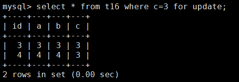
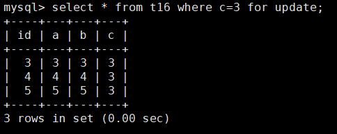
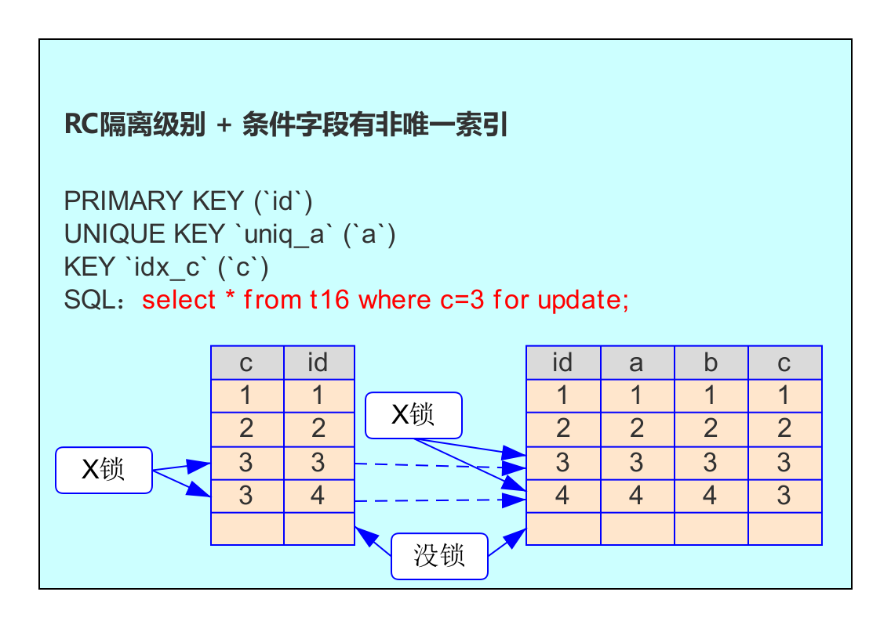
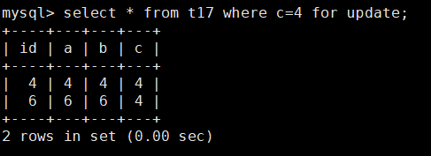
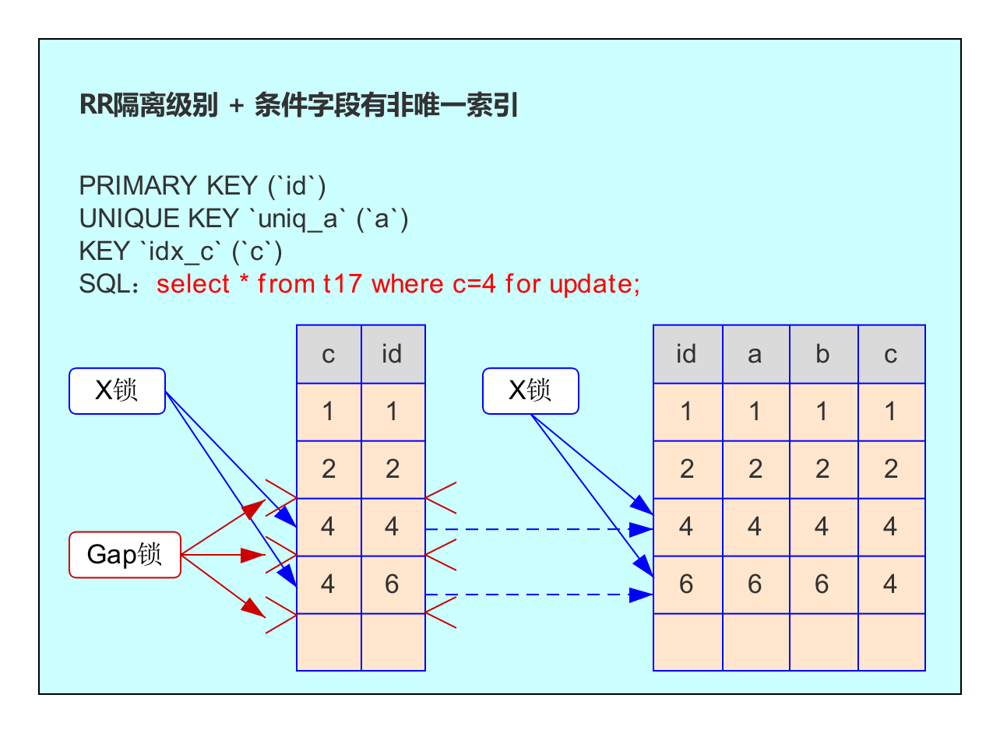
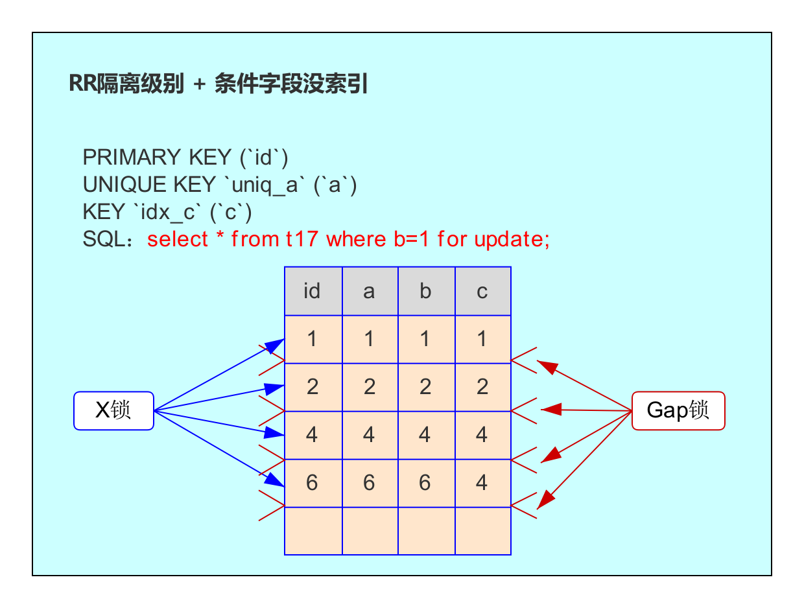

前言
上节我们聊到了 RC 隔离级别的各种情况的锁，这节我们就来一起看看 RR 隔离级别各种情况下的锁，同时揭晓间隙锁的意义。
RC下的幻读
下面我们来做一个实验：
| session1 | session2 |
|---|---|
| set session transaction_isolation=‘READ-COMMITTED’;/* 设置会话隔离级别为 RC*/ | set session transaction_isolation=‘READ-COMMITTED’;/* 设置会话隔离级别为 RC*/ |
| begin; | begin; |
| use muke; select * from t16 where c=3 for update;  | |
| use muke; insert into t16(a,b,c) values (5,5,3); Query OK, 1 row affected (0.00 sec) | |
| commit; | |
| select * from t16 where c=3 for update;  | |
| commit; |
我们看一下上面的实验结果，在 session2 中，同一个事务中，按相同的查询条件重新读取以前检索过的数据，却发现了 session1 插入的满足查询条件的新数据，这也就是上一节讲到的幻读情况。
为什么上面的实验中会出现幻读呢？
我们来看看下面这张图：
从图中可以看出，RC 隔离级别下，只锁住了满足 c=3 的当前行，而不会对后面的位置（或者说间隙)加锁，因此导致 session1 的写入语句能正常执行并提交。
那么应该怎样避免幻读呢？
从上面的分析我们可以知道，产生幻读的原因是：行锁只能锁住当前行，但是新插入的记录，是在被锁住记录之前的间隙。因此，为了解决幻读问题，InnoDB 在 RR 隔离级别下配置了间隙锁（Gap Lock）。
RR 隔离级别下的非唯一索引查询
我们继续看上面的实验，这里不同点是我们把隔离级别设置成 RR。
我们再单独建一张表，表结构与上节的表结构一致，为了方便后面分析，数据稍微有改动，语句如下：
1 | use muke; |
开始 RR 隔离级别下的实验：
| session1 | session2 |
|---|---|
| set session transaction_isolation=‘REPEATABLE-READ’;/* 设置会话隔离级别为 RR*/ | set session transaction_isolation=‘REPEATABLE-READ’;/* 设置会话隔离级别为 RR*/ |
| begin; | begin; |
| use muke; select * from t17 where c=4 for update;  | |
| use muke; insert into t17(a,b,c) values (7,7,4); /* SQL1 */ （等待） | |
select *\ from t17 where c=4 for update;  |
|
| insert into t17(a,b,c) values (7,7,4); /* SQL1 */ Query OK, 1 row affected (20.73 sec) （等 session2 执行 commit; 后，SQL1 马上返回结果） | commit; |
| commit; |
根据实验情况，我们在 session2 中，对满足条件 c=4 的数据加上了排他锁，然后在 session1 写入一条 c=4 的记录，此时会出现等待，直到 session2 对事务进行提交后，session1 才会执行成功。这是为什么呢？我们来看下图：
与 RC 隔离级别下的图相似，但是有个比较大的区别是：RR 隔离级别多了 GAP 锁。
如上图，首先需要考虑哪些位置可以插入新的满足条件 c=4 的项：
- 由于 B+ 树索引是有序的，因此 [2,2]（代表 c 和 id 的值，后面就不一一说明了）前面的记录，不可能插入 c=4 的记录了；
- [2,2] 与 [4,4] 之间可以插入 [4,3]；
- [4,4] 与 [4,6] 之间可以插入 [4,5]；
- [4,6] 之后，可以插入的值就很多了：4,n ；
为了保证这几个区间不会插入新的满足条件 c=4 的记录，MySQL RR 隔离级别选择了 GAP 锁，将这几个区间锁起来。
而上面实验中，语句 insert into t17 (a,b,c) values (7,7,4) 其对应插入 c 和 id 的值为 [4,7]，是在最后这个被 GAP Lock 锁住的区间，因此如上面实验，insert 操作会等待。
RR 隔离级别下的非索引字段查询
上一节中，我们测试了 RC 隔离级别下，非索引字段做条件的当前读会对所有记录都加锁。
这一节，我们测试一下 RR 隔离级别下，非索引字段做条件的当前读加锁情况。
首先对 t17 表中的数据做初始化：
1 | use muke; |
| session1 | session2 | session3 |
|---|---|---|
| set session transaction_isolation=‘REPEATABLE-READ’;/* 设置会话隔离级别为 RR*/ | set session transaction_isolation=‘REPEATABLE-READ’;/* 设置会话隔离级别为 RR*/ | set session transaction_isolation=‘REPEATABLE-READ’;/* 设置会话隔离级别为 RR*/ |
| begin; | ||
| use muke; select * from t17 where b=1 for update; … 1 row in set (0.00 sec) | ||
| use muke; select * from t17 where b=2 for update; （等待） | insert into t17(a,b,c) values (10,10,10); （等待） | |
| commit; | select * from t17 where b=2 for update; … 1 row in set (31.51 sec) （session1 提交后，马上返回结果） | insert into t17(a,b,c) values (10,10,10); Query OK, 1 row affected (8.08 sec) （session1 提交后，马上写入） |
可能你会问？为什么 session3 的 insert 会出现等待？
我们看看下图：

如图，所有记录都有 X 锁，除此之外，每个 GAP 也被加上了 GAP 锁。因此这张表在执行完 select * from t17 where b=1 for update; 到 commit 之前，除了不加锁的快照读，其它任何加锁的 SQL，都会等待，如果这是线上业务表，那就是件非常恐怖的事情了。
总结：RR 隔离级别下，非索引字段做条件的当前读不但会把每条记录都加上 X 锁，还会把每个 GAP 加上 GAP 锁。再次说明，条件字段加索引的重要性。
RR 隔离级别下的唯一索引当前读是否会用到 GAP 锁
GAP 锁的目的是：为了防止同一事务两次当前读，出现幻读的情况。如果能确保索引字段唯一，那其实一个等值查询，最多就返回一条记录，而且相同索引记录的值，一定不会再新增，因此不会出现 GAP 锁。
因此以唯一索引为条件的当前读，不会有 GAP 锁。所以 RR 隔离级别下的唯一索引当前读加锁情况与 RC 隔离级别下的唯一索引当前读加锁情况一致。这里就不再实验了。
总结
本节讲解了 RC 隔离级别出现幻读的情况，而 RR 通过 GAP 锁解决了幻读，但是 RR 隔离级别相对于 RC，锁的范围可能更大了，特别是对没有索引的字段进行当前读（比如增、删、改或者 select … for update）时，会阻塞除快照读以外所有的并发 SQL。
而后面我们又聊了以唯一索引做为条件的当前读不会用到 GAP 锁，因为根据唯一索引查询最多就一条记录，而且相同索引记录的值，一定不会再新增。

...
...
This is copyright.